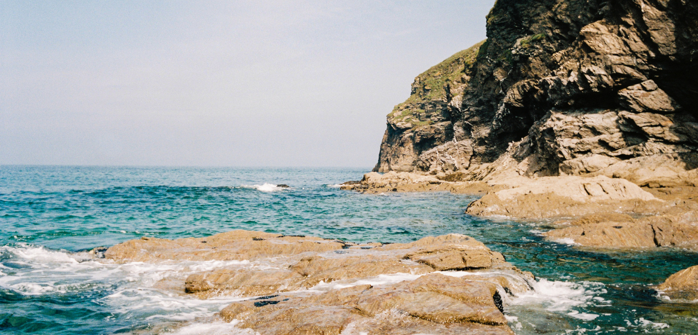
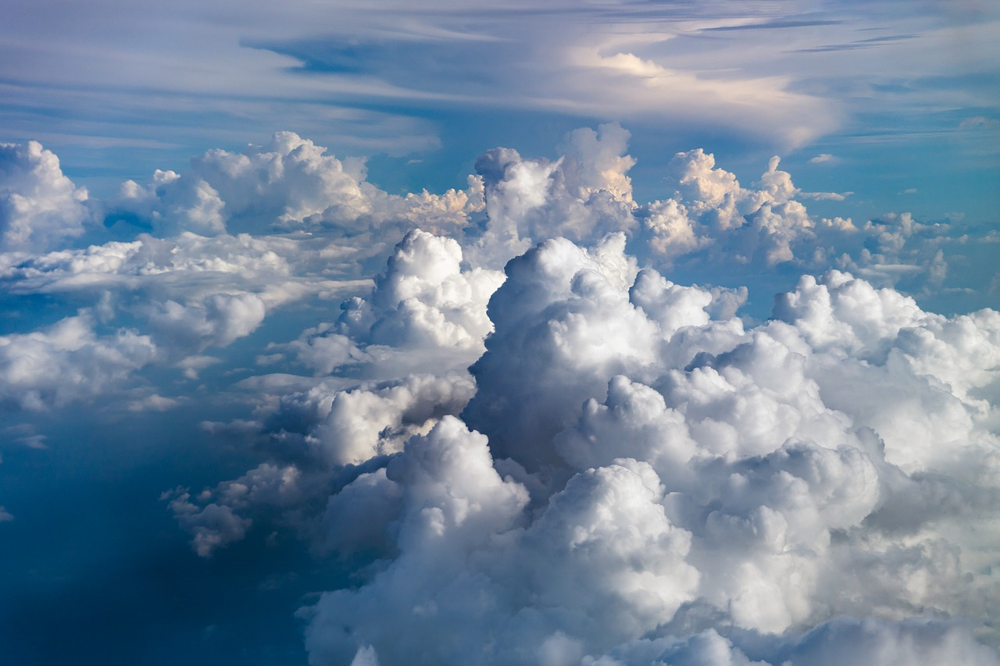
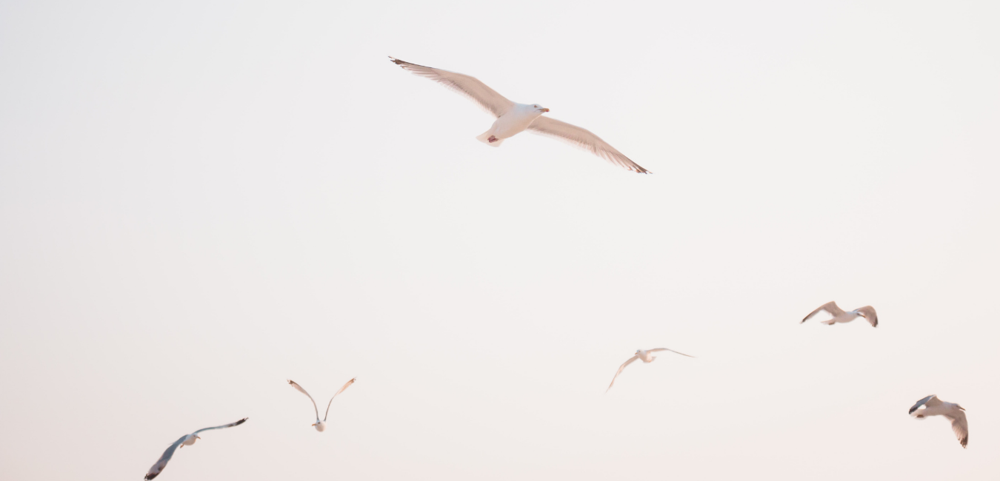

9 July, 2023
Out of Sight, Out of Mind: Perspectives on Marine Conservation from a Visually Impaired Nature Photo
The natural world exists as a remarkable network of relationships from the smallest of microorganisms to the largest mammals, the vast majority of these organisms are too small to be seen by the human eye. Pelagibacterales, for example, is the most abundant organism on earth, with up to half a million of these microbial cells found in every teaspoon of seawater. These tiny bacteria contribute to regulating the earth’s temperature through a symbiotic relationship with phytoplankton. Meanwhile, phytoplankton collectively produces 70-80% of the oxygen on earth compared to 20-30% from inland plants and trees. With powerful images of the burning Amazon rainforest, forest fires in California and ariel shots of mass deforestation in south-east Asia dominating the mainstream media, it’s easy to forget about the little guys in all this. We seem to be facing a problem of visibility surrounding the response to the climate crisis. Whether it be acknowledging the importance of a tiny phytoplankton compared to a massive mahogany in the Amazon or the importance of a plastic straw compared to the millions of specs of microplastics, we need to remember that size doesn’t always matter…
As a visually impaired nature photographer the small things, and quite often the very big things pass me by. Anyone who has been out in the natural world with me can attest to the numbers of birds that I haven’t seen, sharks that seem to just pass me by whilst on a dive, or whales that were just a bit too far away. It’s a bit of a shock whenever I manage to capture anything of note in my photos, and probably why a career in natural history photography remains a bit too ambitious. Nevertheless, when I come to look at my pictures or films in the post, I am able to scale things up and see these fine details, creatures, and plants that before were just a bit of a blur. The blurriness of it all presents me with a unique opportunity to compose shots in a different way that perhaps focuses on the bigger picture rather than the fine details. Not only does this mean that I shoot a lot of landscapes, but when I do have the rare opportunity of seeing a creature in its environment, I like to present it as part of something bigger than itself. All that said, I won’t be getting a picture of phytoplankton anytime soon, but every time I take a picture in the ocean, it’s nice to remember that there are millions of organisms within those tiny pixels or grains of film that help keep this planet alive.he state of the climate is pretty daunting, and it is hard to know what to do in light of all the destruction going on around us. However, keeping our oceans healthy has to be a priority. We may not be able to see everything that lies beneath the surface but that doesn’t mean it’s not worth protecting and it doesn’t mean that we can use the ocean as a dumping ground. Much of the damage we are inflicting upon the ocean may be out of sight for most of us, but when we observe the big picture, we can’t be blind to the fact that healthy oceans are fundamental in this journey to live sustainable and environmentally conscious lives. So, embrace the things you can’t see. Trust me, it’s a trip.

1st Aug, 2023
Forecast
It’s amazing how the weather shapes our memories. We can all remember the perfect four seasons as they are preserved in our minds: crisp winter snow and long summer days that never end. Kicking through piles of mouldering autumn leaves and the fresh first days of spring. A few years ago I was running a nature writing workshop with some youngsters living on an estate in my home city of Sheffield and we conducted a small experiment. It was autumn and we climbed to the top of the nearest hill (this is Sheffield so it isn’t hard to find one) read some poems about autumn and described our own memories of the season. The young writers recounted their favourite autumn memories: warm mugs of hot chocolate, the reassuring weight of a scarf coiled around the neck, watching the trees turn to fire and listening to raindrops pattering on a skylight. That moment when morning mists rise and the very air seems to change in flavour. And then we compared those memories to the reality in front of us: it was late October and the leaves had yet to turn, it was still warm enough for flies to be buzzing around our heads and we were all sweating in our winter coats. That day people were sunbathing on the Yorkshire coast.
Our memories may play tricks on us when it comes to the weather, but what is also clear is that now as a result of climate change our seasons are shifting in increasingly unfamiliar ways. While in our minds the four seasons are perfectly quartered like an apple, these days that is turning into a mush. In my new book, Forecast, a diary of the lost seasons, I have made it my mission to map out exactly how climate change is changing the seasons and affecting people and nature. Spring is speeding up and autumn lengthening into winters which are increasingly free of frost and snow. And all this is playing havoc with the natural world. These days migratory birds such as swallows are arriving a full two weeks earlier than they did a few decades ago while other species are increasingly over-wintering in Britain. A recent report estimated one-third of all UK bird species were being impacted by climate change (both negatively and positively as smaller species such as long-tailed tits and goldcrest are coping better with warmer winters). According to a recent Met Office report published last December, by the 2060s only the highest bits of ground in northern England and Scotland could still experience snowy days if global emissions continue to accelerate at the current pace. Meanwhile heatwaves, drought, wildfire and flooding are all becoming far more regular occurrences. While the British weather has always been a changeable thing, the future looks increasingly unrecognisable. A few years ago a psychological study was devised by university researchers to analyse the extent to which adverse weather conditions provoke nostalgia. Participants were encouraged to listen to recordings of extreme weather events like wind, thunder and rain and jot down their feelings. They were also invited to keep a 10-day weather diary which was assessed against meteorological records. The results were clear: adverse weather leads to psychological distress which in turn leads to more intense feelings of nostalgia which the brain uses to transport us to a more soothing place. That is food for thought as the gap widens between our memory of the weather and the everyday reality. Nostalgia, as the old saying goes, isn’t what it used to be.

22 September, 2023
How Nature Impacts Me Within
Nature has a profound impact on me within. Whenever I immerse myself in the beauty of nature, I feel a sense of peace and tranquility. The sight of lush green forests, the sound of chirping birds, and the scent of fresh flowers all awaken a deep connection within me. Nature rejuvenates my spirit and helps me find clarity amidst the chaos of daily life. It reminds me of the importance of slowing down, appreciating the present moment, and finding solace in the simple wonders of the world. In today's fast-paced world, it's easy to get caught up in the hustle and bustle of everyday life. We often find ourselves glued to screens, bombarded with notifications and distractions. But in the midst of this chaos, nature serves as a sanctuary for me. It provides a much-needed escape from the noise and stress of modern living. One of the most impactful ways nature affects me within is through its ability to calm my mind. When I step into a forest or sit by the ocean, I instantly feel a sense of serenity wash over me. The gentle rustling of leaves, the rhythmic crashing of waves, and the soft whispers of the wind create a symphony that soothes my soul. It's as if nature has its own language, and in its presence, my worries and anxieties melt away. Nature also has a way of grounding me and reminding me of the bigger picture. In the grand scheme of things, our problems and concerns can seem trivial when compared to the vastness of the natural world. Standing beneath a starry night sky or gazing at a majestic mountain range, I am reminded of the immense beauty and power that exists beyond our human realm. It humbles me and puts things into perspective, reminding me of the fleeting nature of our existence and the importance of cherishing every moment.
Furthermore, nature inspires me creatively. The vibrant colors, intricate patterns, and unique shapes found in the natural world ignite my imagination and fuel my artistic endeavors. Whether it's capturing a breathtaking landscape through photography, painting a vivid scene on canvas, or simply jotting down my thoughts in a journal, nature provides endless inspiration. It's a wellspring of creativity that never runs dry. But perhaps the most profound impact nature has on me within is its ability to connect me to something greater than myself. When I'm surrounded by nature, I feel a deep sense of interconnectedness with the world around me. I am reminded that I am a part of a larger ecosystem, intricately woven into the fabric of life